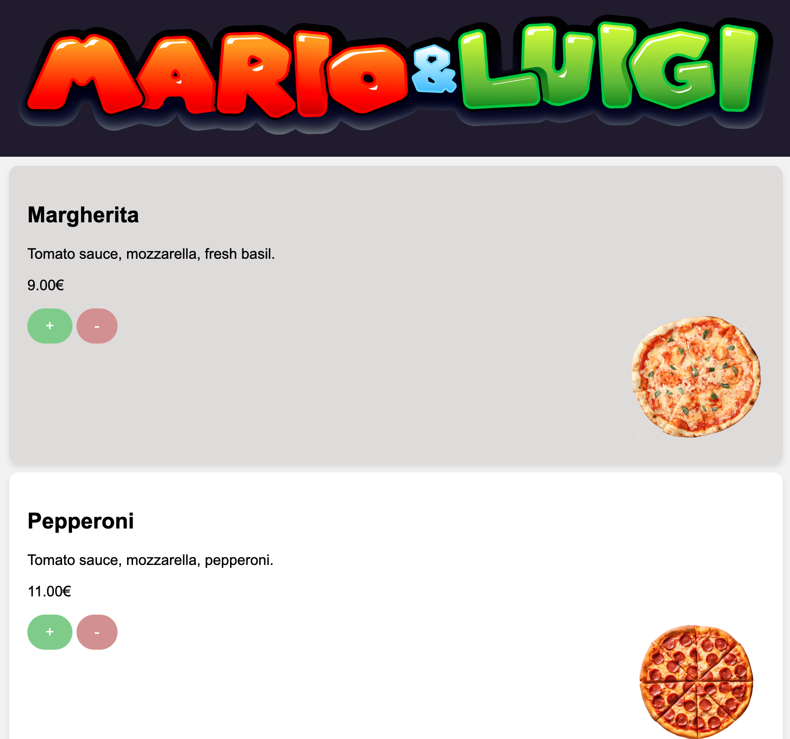
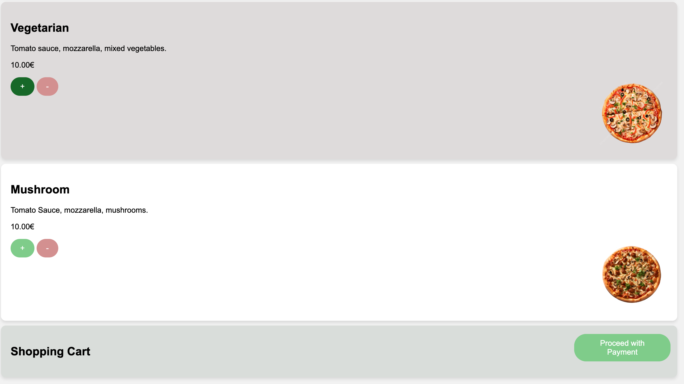

This semester, our group project was to create a housing website for international students.
I was assigned to create the log in, sign in and about us page for our website, aswell as create user personas based on the results from the user research we conducted.
I am very pleased with the outcome of my pages and I am proud of the progress I have made.
I beleive that the more I practice, the high quality my coding abilities become and this is evident in my code.


At the start of the semester, I worked on the shopping cart for the Pizza Project. I made a fully functional shopping cart where users could add in their desired quantity and flavour of pizza and make an online order. This was not an easy proccess but I am proud of myself and pleased with the end result. This was also my first group project since starting my studies and so I learnt a lot of important skills.